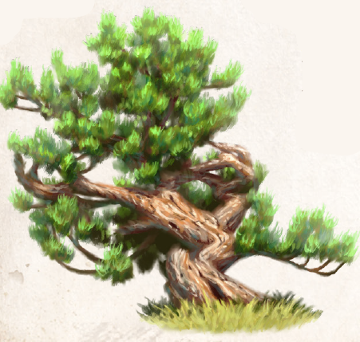

Die Atan-Kiefer gedeiht am besten in den Höhenlagen des Ehernen Schwerts, und wäre Atanax, der aus ihrer Rinde hergestellte Sud, kein so probates Heilmittel, würde vermutlich niemand es auf sich nehmen, nach ihr zu suchen. Doch der Sud der drei Tage lang in Wasser eingekochten Rinde ist ein heilkräftiges Gebräu, das bei jeder Krankheit eingesetzt werden kann. Es wirkt nicht nur fiebersenkend, oft verkürzt es auch die Krankheitsdauer und ist damit eine sehr gefragte Universalarznei. Atanax schmeckt ungemein bitter und wird, wenn er Kindern verabreicht wird, mit Honig versetzt. Aufbewahrt in lichtundurchlässigen Gefäßen hält er sich gut ein Jahr lang. Der anderthalb Schritt hohe Kleinbaum oder -strauch ähnelt mit seiner tiefbraunen Rinde und den eher kurzen Nadeln der gemeinen Krüppelkiefer, zeichnet sich aber durch eine wesentlich längere Lebensdauer aus. Im Gegenzug ist die Atan-Kiefer nicht sehr fruchtbar und bringt nur selten Schösslinge hervor. Es gilt darum als großer Perainefrevel, die Kiefer ihres Schutzes zu berauben und die ganze Rinde abzuschälen, was ein nahezu sicheres Todesurteil wäre. Die Rinde kann ganzjährig geerntet werden.
Atan-Kiefern sind selten und schwer zu finden. Dennoch wird Atanax in Nord- und Mittelaventurien recht regelmäßig angeboten, bisweilen ungewöhnlich günstig, dann wieder ungemein teuer. Meist handelt es sich dabei um wirkungslose Gebräue, mit denen Quacksalber und Scharlatane gewissenlos die Notlage so manches Verzweifelten ausnutzen.
Verbreitung:
Landschaftstyp: Gebirge
Regionen: Nord- und Mittelaventurische Gebirge (ab 6.000 Schritt Höhe, insbesondere Ehernes Schwert, Raschtulswall, selten Rote Sichel)
Suchschwierigkeit: -3
Bestimmungsschwierigkeit: -2
Anwendungen: 1/2/3/4/5/6
Wirkung:
Roh:
Berührung: keine
Einatmung: keine
Verzehr: keine
Verarbeitet: siehe Rezepte
Preis: 6 / 9 Silbertaler
Rezepte:
Pflanzliche Hilfsmittel: Atanax
Volksbrauchtum: Atanax wird überall in Aventurien als Allheilmittel angepriesen, aber fast nie wirklich verabreicht, was zu erheblichen Placeboeffekten führt, wenn man Patienten davon überzeugen kann, wirklich Atanax zu besitzen.
Haltbarkeit:
Roh: siehe Haltbarmachung
Verarbeitet: Atanax 12 Monate